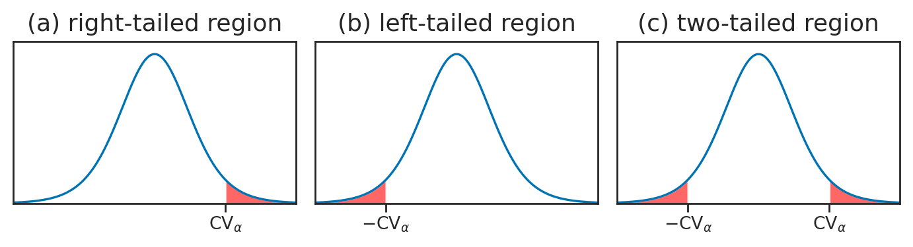

Section 3.6 — Statistical design and error analysis#
This notebook contains the code examples from Section 3.6 Statistical design and error analysis of the No Bullshit Guide to Statistics.
Notebook setup#
# load Python modules
import os
import numpy as np
import pandas as pd
import seaborn as sns
import matplotlib.pyplot as plt
# Plot helper functions
from plot_helpers import plot_pdf
from plot_helpers import savefigure
# Figures setup
plt.clf() # needed otherwise `sns.set_theme` doesn't work
from plot_helpers import RCPARAMS
RCPARAMS.update({'figure.figsize': (10, 3)}) # good for screen
# RCPARAMS.update({'figure.figsize': (5, 1.6)}) # good for print
sns.set_theme(
context="paper",
style="whitegrid",
palette="colorblind",
rc=RCPARAMS,
)
# Useful colors
snspal = sns.color_palette()
blue, orange, purple = snspal[0], snspal[1], snspal[4]
# High-resolution please
%config InlineBackend.figure_format = 'retina'
# Where to store figures
DESTDIR = "figures/stats/design"
<Figure size 640x480 with 0 Axes>
# set random seed for repeatability
np.random.seed(42)
#######################################################
Definitions#
Hypothesis testing as a decision rule#
Statistical design#
# FIGURE
d_small = 0.20
d_medium = 0.50
d_large = 0.80
Example 1: detect kombuncha volume deviation from theory#
from statsmodels.stats.power import tt_solve_power
min_delta = 4
std_pop = 10
d = min_delta / std_pop
n = tt_solve_power(effect_size=d, nobs=None, alpha=0.05, power=0.8, alternative='two-sided')
n
51.009448579637365
n = int(n)
n
51
#######################################################
kombuchapop = pd.read_csv("../datasets/kombuchapop.csv")
batch55pop = kombuchapop[kombuchapop["batch"]==55]
kpop55 = batch55pop["volume"]
np.random.seed(42)
ksample55 = kpop55.sample(n)
ksample55.values
array([ 986.93, 997.65, 999.11, 994.12, 1004.86, 1012. , 988.35,
1000.79, 1012.09, 988.39, 985.64, 994.23, 990.63, 1011.05,
1008.73, 1007.68, 987.89, 1002.74, 996.04, 986.46, 1005.77,
1024.76, 986.84, 986.43, 998.54, 1006.27, 995.14, 999.45,
1006.04, 1006.13, 1011.93, 1000.7 , 1012.77, 994.04, 996.23,
987.79, 977.65, 1006.07, 995.5 , 1012.98, 980.8 , 976.5 ,
988.78, 989.33, 1012.49, 1004.41, 997.59, 1005.93, 1008.5 ,
1008.73, 988.63])
from stats_helpers import simulation_test_mean
simulation_test_mean(ksample55, mu0=1000, sigma0=10)
0.3211
from stats_helpers import ttest_mean
ttest_mean(ksample55, mu0=1000)
0.3485870547277571
Example 2: comparison of East vs. West electricity prices#
eprices = pd.read_csv("../datasets/eprices.csv")
eprices.groupby("end").describe()
| price | ||||||||
|---|---|---|---|---|---|---|---|---|
| count | mean | std | min | 25% | 50% | 75% | max | |
| end | ||||||||
| East | 9.0 | 6.155556 | 0.877655 | 4.8 | 5.5 | 6.3 | 6.5 | 7.7 |
| West | 9.0 | 9.155556 | 1.562139 | 6.8 | 8.3 | 8.6 | 10.0 | 11.8 |
from statsmodels.stats.power import TTestIndPower
from statsmodels.stats.power import ttest_power
Delta_min = 1
std_guess = 1
d = Delta_min / std_guess
# Calculate the power of a t-test for two independent samples
TTestIndPower().power(effect_size=d, nobs1=9, alpha=0.05, ratio=1, alternative='two-sided')
0.5133625312934842
help(TTestIndPower().power)
Help on method power in module statsmodels.stats.power:
power(effect_size, nobs1, alpha, ratio=1, df=None, alternative='two-sided') method of statsmodels.stats.power.TTestIndPower instance
Calculate the power of a t-test for two independent sample
Parameters
----------
effect_size : float
standardized effect size, difference between the two means divided
by the standard deviation. `effect_size` has to be positive.
nobs1 : int or float
number of observations of sample 1. The number of observations of
sample two is ratio times the size of sample 1,
i.e. ``nobs2 = nobs1 * ratio``
alpha : float in interval (0,1)
significance level, e.g. 0.05, is the probability of a type I
error, that is wrong rejections if the Null Hypothesis is true.
ratio : float
ratio of the number of observations in sample 2 relative to
sample 1. see description of nobs1
The default for ratio is 1; to solve for ratio given the other
arguments, it has to be explicitly set to None.
df : int or float
degrees of freedom. By default this is None, and the df from the
ttest with pooled variance is used, ``df = (nobs1 - 1 + nobs2 - 1)``
alternative : str, 'two-sided' (default), 'larger', 'smaller'
extra argument to choose whether the power is calculated for a
two-sided (default) or one sided test. The one-sided test can be
either 'larger', 'smaller'.
Returns
-------
power : float
Power of the test, e.g. 0.8, is one minus the probability of a
type II error. Power is the probability that the test correctly
rejects the Null Hypothesis if the Alternative Hypothesis is true.
Explanations#
Unique value proposition of hypothesis testing#
One-sided and two-sided rejection regions#
filename = os.path.join(DESTDIR, "panel_rejection_regions_left_twotailed_right.pdf")
from scipy.stats import t as tdist
rvT = tdist(9)
xs = np.linspace(-4, 4, 1000)
ys = rvT.pdf(xs)
with plt.rc_context({"figure.figsize":(7,2)}), sns.axes_style("ticks"):
fig, (ax3, ax1, ax2) = plt.subplots(1,3)
# RIGHT
title = '(a) right-tailed region'
ax3.set_title(title, fontsize=13)#, y=-0.26)
sns.lineplot(x=xs, y=ys, ax=ax3)
ax3.set_xlim(-4, 4)
ax3.set_ylim(0, 0.42)
ax3.set_xticks([2])
ax3.set_xticklabels([])
ax3.set_yticks([])
# highlight the right tail
mask = (xs > 2)
ax3.fill_between(xs[mask], y1=ys[mask], alpha=0.6, facecolor="red")
ax3.text(2, -0.03, r"$\mathrm{CV}_{\alpha}$", verticalalignment="top", horizontalalignment="center")
# LEFT
title = '(b) left-tailed region'
ax1.set_title(title, fontsize=13) #, y=-0.26)
sns.lineplot(x=xs, y=ys, ax=ax1)
ax1.set_xlim(-4, 4)
ax1.set_ylim(0, 0.42)
ax1.set_xticks([-2])
ax1.set_xticklabels([])
ax1.set_yticks([])
# highlight the left tail
mask = (xs < -2)
ax1.fill_between(xs[mask], y1=ys[mask], alpha=0.6, facecolor="red")
ax1.text(-2, -0.03, r"$-\mathrm{CV}_{\alpha}$", verticalalignment="top", horizontalalignment="center")
# TWO-TAILED
title = '(c) two-tailed region'
ax2.set_title(title, fontsize=13)#, y=-0.26)
sns.lineplot(x=xs, y=ys, ax=ax2)
ax2.set_xlim(-4, 4)
ax2.set_ylim(0, 0.42)
ax2.set_xticks([-2,2])
ax2.set_xticklabels([])
ax2.set_yticks([])
# highlight the left and right tails
mask = (xs < -2)
ax2.fill_between(xs[mask], y1=ys[mask], alpha=0.6, facecolor="red")
ax2.text(-2, -0.03, r"$-\mathrm{CV}_{\alpha}$", verticalalignment="top", horizontalalignment="center")
mask = (xs > 2)
ax2.fill_between(xs[mask], y1=ys[mask], alpha=0.6, facecolor="red")
ax2.text(2, -0.03, r"$\mathrm{CV}_{\alpha}$", verticalalignment="top", horizontalalignment="center")
savefigure(fig, filename)
Saved figure to figures/stats/design/panel_rejection_regions_left_twotailed_right.pdf
Saved figure to figures/stats/design/panel_rejection_regions_left_twotailed_right.png

Statistical design calculations#
Sample size calculation#
import pingouin as pg
from statsmodels.stats import power
# deisng parameters
EFFECT_SIZE = 0.5
ALPHA = 0.05
POWER = 0.8
# using statsmodels
power_analysis = power.TTestIndPower()
sample_size = power_analysis.solve_power(effect_size=EFFECT_SIZE,
power=POWER,
alpha=ALPHA)
print(f'Required sample size (statsmodels): {sample_size:.0f}')
Required sample size (statsmodels): 64
# using pingouin
sample_size = pg.power_ttest(d=EFFECT_SIZE,
alpha=ALPHA,
power=POWER,
n=None)
print(f'Required sample size (pingouin): {sample_size:.0f}')
Required sample size (pingouin): 64
from statsmodels.stats.power import tt_ind_solve_power
mean_diff, sd_diff = 0.5, 0.5
std_effect_size = mean_diff / sd_diff
n = tt_ind_solve_power(effect_size=std_effect_size, alpha=0.05, power=0.8, ratio=1, alternative='two-sided')
print('Number in *each* group: {:.5f}'.format(n))
Number in *each* group: 16.71472
from statsmodels.stats.power import tt_solve_power
min_delta = 4
std_pop = 10
d = min_delta / std_pop
tt_solve_power(effect_size=d, nobs=None, alpha=0.05, power=0.8, alternative='two-sided')
51.009448579637365